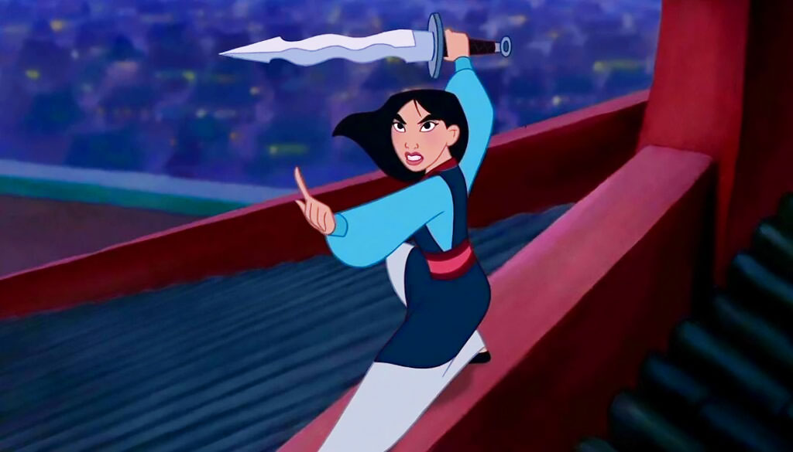
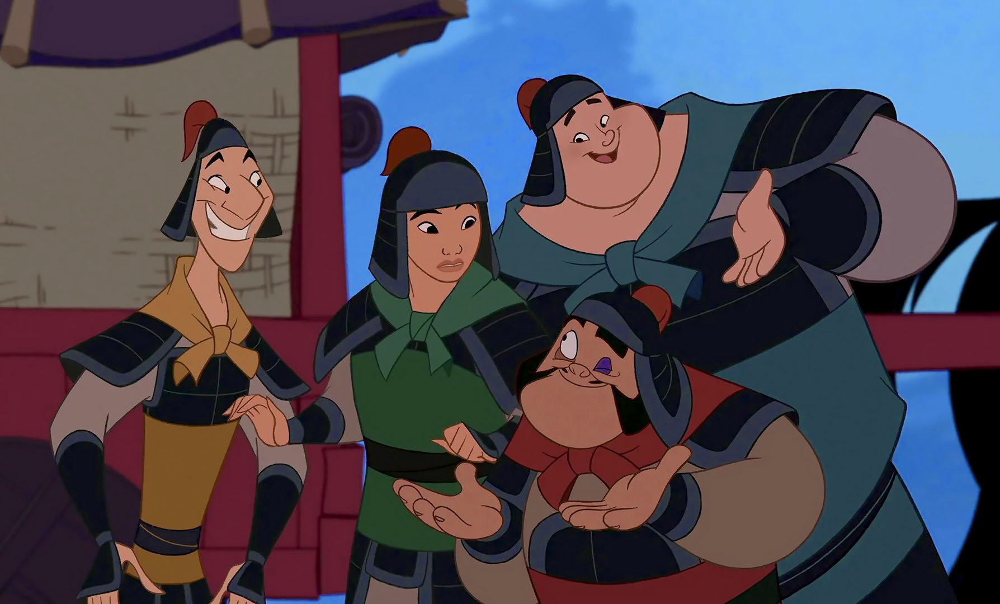

About Mulan
Fa Mulan is the titular protagonist of Disney's 1998 animated feature film Mulan. She is the strong-willed and tenacious daughter of a war veteran, who strives to uphold her family's honor. When her father is called back into battle to defend China from Shan Yu, Mulan opts to protect him by taking his place under the guise of a male soldier named Ping.
Mulan's Abilities
Mulan fights for China using her abilities
- Martial Arts
- Swordmanship
- Marksmanship
- Horseback riding
- Strategist
Mulan's Friends
Mulan and some of her friends
Mulan's friends helped her save China! Click on the links below to read more about them.